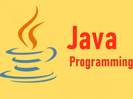

java
Java is a programming language created by James Gosling from Sun Microsystems (Sun) in 1991. The target of Java is to write a program once and then run this program on multiple operating systems. The first publicly available version of Java (Java 1.0) was released in 1995. Sun Microsystems was acquired by the Oracle Corporation in 2010. Oracle has now the steermanship for Java. In 2006 Sun started to make Java available under the GNU General Public License (GPL). Oracle continues this project called OpenJDK.
the importance of java
- Java is a rich Set of APIs
Java beats other programming languages in the class of moneyed application programming interface. The programmers have the choice to use a variety of Java APIs to achieve everyday improvement tasks exclusive of writing extra code. Some of these APIs shared by the big enterprise, while members of the society upload others.
- Simplify the improvement of Custom Big Data Solutions
At current, big data is one of the newest trends in appliance development. Many companies want the custom application to store, access, collect and divide a vast amount of planned and unstructured data . Java does not come with built-in features to make accessible the improvement of custom big data solutions.
- Java is a Simplify Development of Real-Time Software
The popularity rate of real-time software has been growing. It is important for sending information or outcome within the less period. At present, real-time software applications are being used by mobile devices, automobiles, medical devices, and factories.
- Java is Mature and Keeps Evolving
Java is one of the natural world and stable programming language. But Oracle Corporation often updates the programming language with the help of a vibrant society. Each latest edition of java comes with several new features and improved performance. For example, the latest version of Java supports both practical and concurrent programming.
